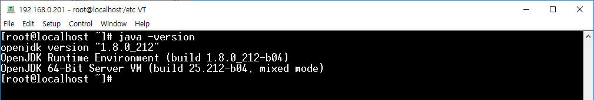
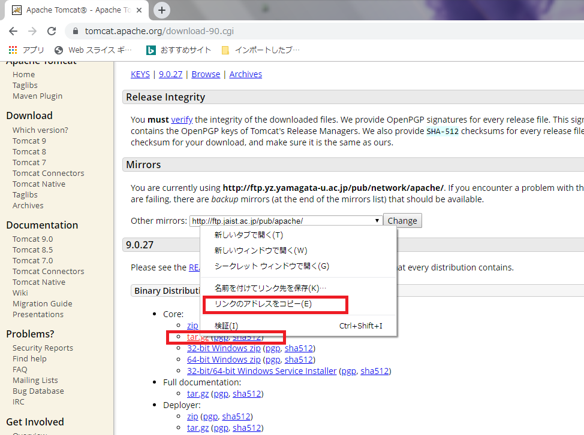
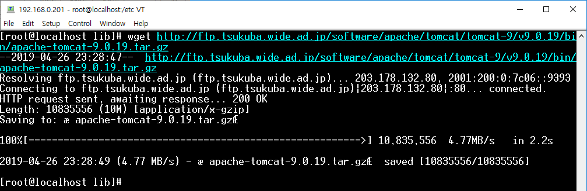
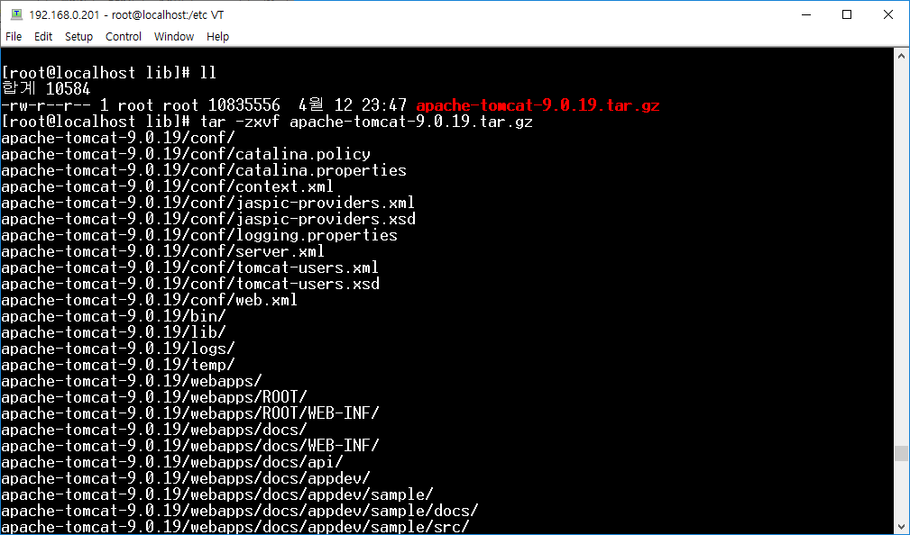
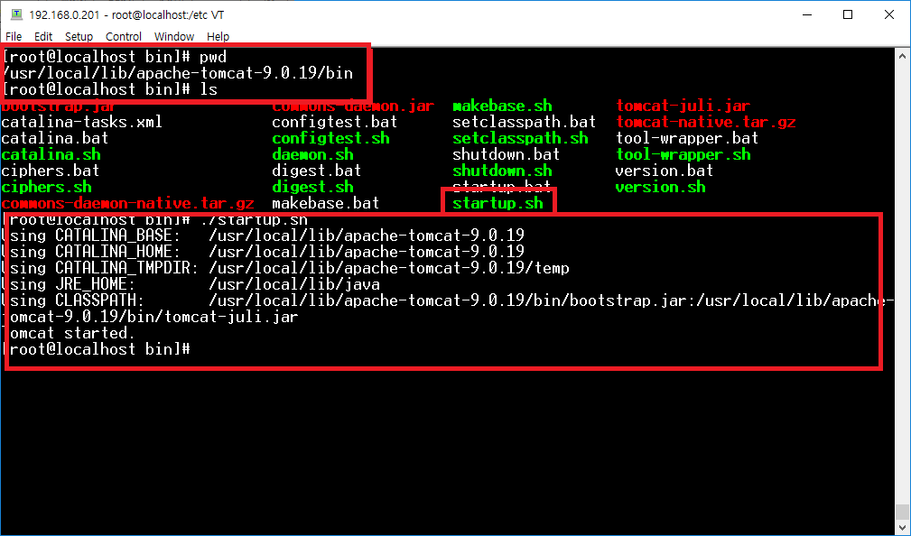
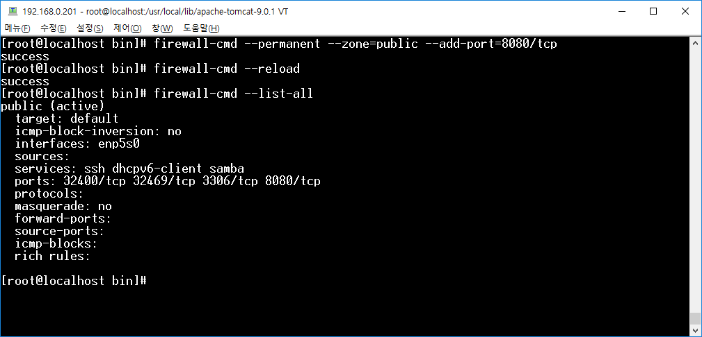
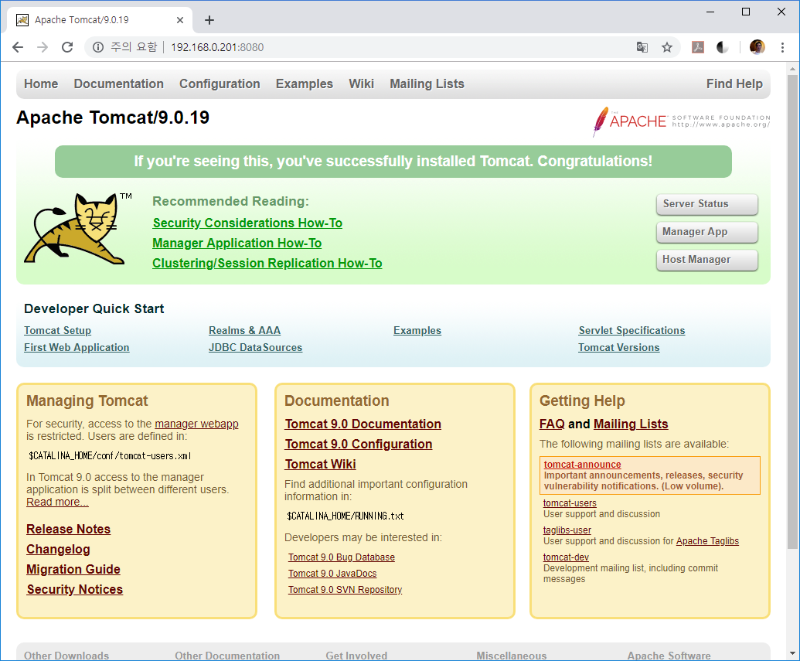
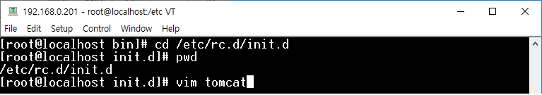
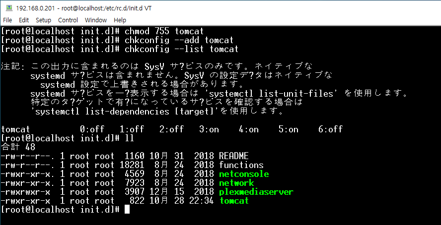

[CentOS] Tomcat インストール方法
こんにちは。明月です。
Javaでウェブサーバーを立ち上がるようには「apache-tomcat」が必要です。
「apache-tomcat」とはウェブブラウザからHttp要請が来る時に動的にウェブページを作り直し、ウェブブラウザに応答するウェブアプリケーションサーバ(WAS)です。
正確にいうとウェブサーバではなく、ウェブアプリケーションサーバですね。でもこのトムキャットは「apache」機能も一部含めているので、独立でサーバを立ち上がることができます。
でも、ロードバランシングや仮想ホストなどで純正な「apache」よりはパフォーマンスや機能が足りないので、実際には「apache」 + 「tomcat」でサーバを構成することになります。
開発環境は「tomcat」だけでも十分ですね。
「CentOS」に「tomcat」をインストールしましょう。
先、「tomcat」をサーバで使うようには「java」が先にインストールされなければならないです。
link - [CentOS] Java インストール

これから「/usr/local/lib」のディレクトリに行ってトムキャットをダウンロードしましょう。
link - https://tomcat.apache.org/download-90.cgi


ダウンロードが終わったら圧縮を解凍して、起動しましょう。


ファイアウォールでウェブポート(tomcatの場合は基本8080)を開放しましょう。
firewall-cmd --permanent --zone=public --add-port=8080/tcp
firewall-cmd --reload
firewall-cmd --list-all

ブラウザで8080ポートで接続すれば下記とおりの結果がでます。

起動することができたら、サーバが起動するたびに自動にトムキャットと起動されるように設定しなければならないです。
「/etc/rc.d/init.d」に行って「tomcat」という起動実行ファイルを作りましょう。

そこで下記とおりにスクリプトを作成しましょう。
#!/bin/bash
#Startup script for the Tomcat Server
# chkconfig: 345 50 50
# description: Tomcat is a Web application server.
# processname: java
# directory : CATALINA_HOME=/usr/local/tomcat7
#source /etc/profile
#export CATALINA_HOME=/usr/local/tomcat7
case "$1" in
start)
echo "Starting tomcat: "
su - root -c /usr/local/lib/apache-tomcat-9.0.19/bin/startup.sh
;;
stop)
echo "Shutting down tomcat: "
su - root -c /usr/local/lib/apache-tomcat-9.0.19/bin/shutdown.sh
;;
restart)
echo "Restarting tomcat: "
su - root -c /usr/local/lib/apache-tomcat-9.0.19/bin/shutdown.sh;
su - root -c /usr/local/lib/apache-tomcat-9.0.19/bin/startup.sh
;;
*)
echo "Usage: service tomcat {start|stop|restart}"
exit 1
esac
exit 0
そのファイルタイプを「chmode」で変更して「chkconfig」で登録すれば完了になります。

- [Ubuntu] PHPをインストール、Composer設定する方法2019/11/13 07:32:21
- [Ubuntu] テーマ(Arc)を変更する方法(tweak)2019/11/12 07:32:13
- [Ubuntu] Apache2をインストールする方法2019/11/11 07:28:28
- [Ubuntu] 「acquire the dpkg frontend lock」のエラーを解決方法2019/11/10 22:19:34
- [Ubuntu] JavaインストールとEclipseをインストールする方法2019/11/08 07:29:55
- [Ubuntu] MariaDB(Mysql)をインストールする方法2019/11/07 07:50:58
- [Ubuntu] Chromeをインストールする方法2019/11/06 19:48:19
- [CentOS] YUMについて、YUMが出来ない場合処理方法2019/11/05 07:17:58
- [CentOS] MariaDB(Mysql)をインストール2019/11/04 18:35:10
- [CentOS] FTPインストールする方法(vsftpd)2019/11/01 07:29:57
- [CentOS] SAMBAインストール方法2019/10/30 07:38:57
- [CentOS] PHPインストールする方法2019/10/29 20:09:03
- [CentOS] ApacheとTomcatの連携2019/10/29 07:28:33
- [CentOS] Tomcat インストール方法2019/10/28 22:38:56
- [CentOS] Java インストール2019/10/28 00:22:32
- [Java] POIを利用してExcelを扱う方法2020/03/17 01:48:00
- [Java] PDFを出力する方法(itextpdf)2020/03/13 00:47:31
- [Java] ログライブラリ(log4j)を使う方法2020/03/12 00:54:39
- [Java] Jsonタイプのデータを使う方法(Gsonライブラリ)2020/03/11 00:30:15
- [Java] Base64にエンコード、デコードする方法2020/03/09 10:24:01
- [Java] cmdコマンドを実行するための方法2020/03/06 18:01:10
- [Java] メール(javax.mail)を発送する方法2020/03/05 20:07:49
- [Java] クラス複製(Clonable, Reflection)2020/03/05 00:03:19
- [Java] シリアライズ(直列化: Serializable)2020/03/03 00:03:33
- [Java] StringBuilderとStringBufferの差異2020/03/02 07:52:22
- [Java] Compare関数を使う方法2020/02/29 03:00:00
- [Java] 数字フォーマット(お金表示及び小数点以下表示)2020/02/28 03:00:00
- [Java] サーブレット環境で現在の実行ディレクトリを取得する方法2020/02/27 03:00:00
- [Java] 日本語をユニコードに変換して、ユニコードから日本語に変換する方法2020/02/26 03:00:00
- [Java] コンソールからデータを受け取る方法(System.in)2020/02/25 03:00:00